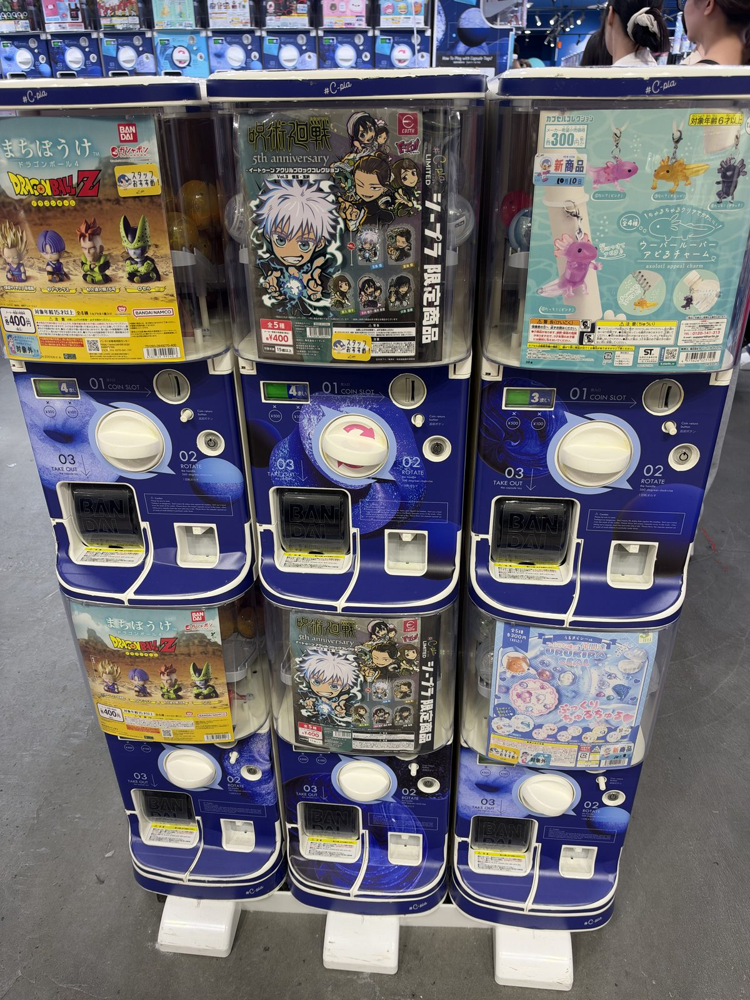
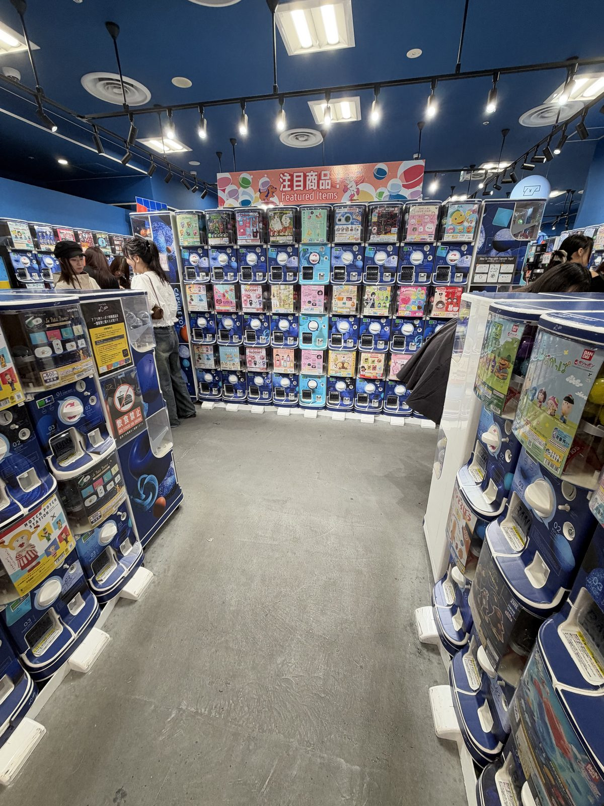
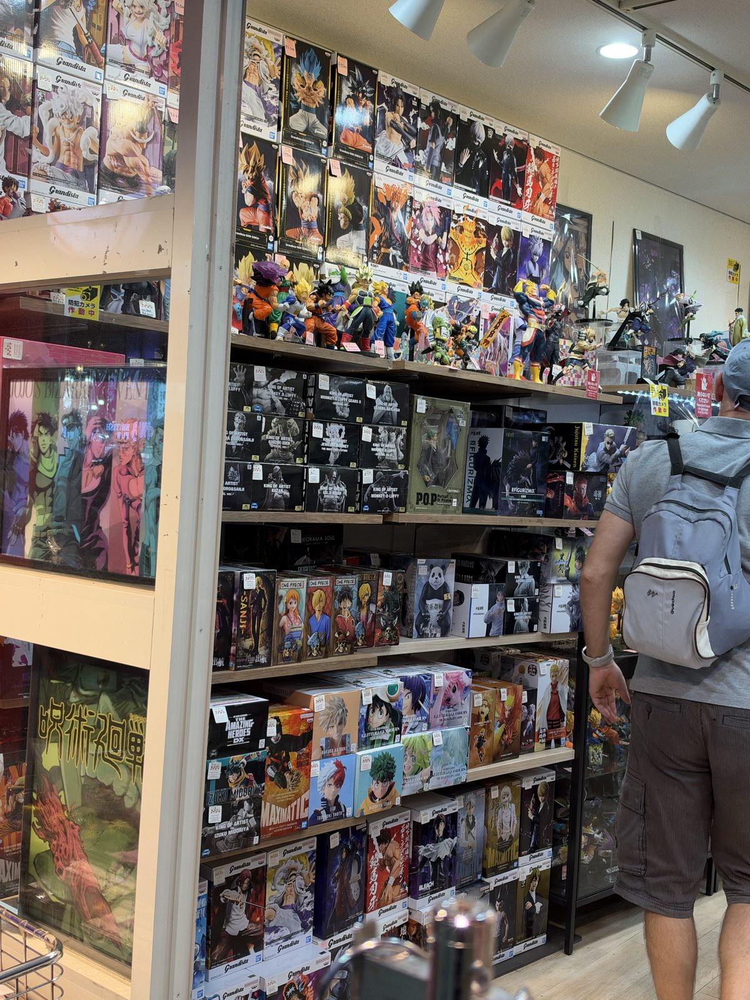
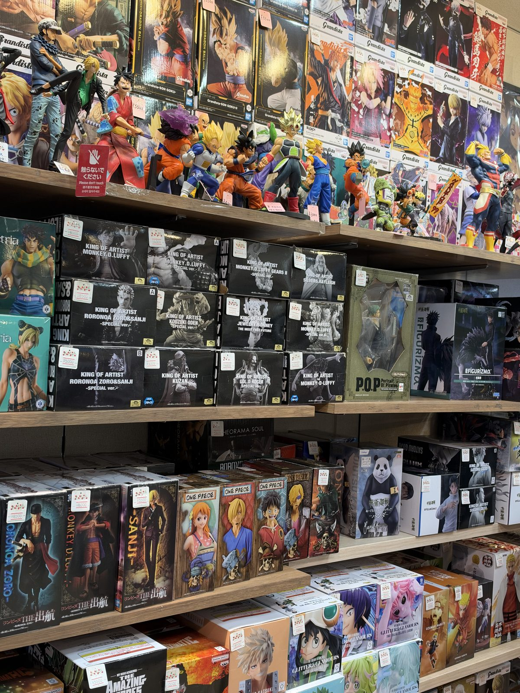
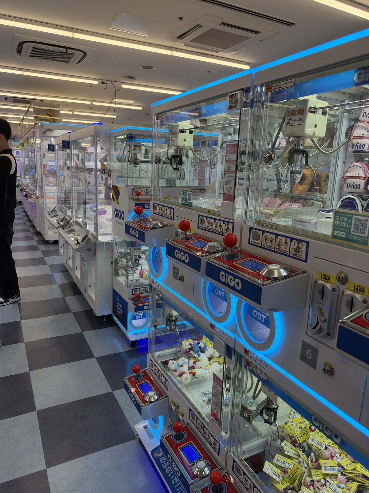

CHARACTER GOODS
Gachapon, Figures and Crane Games in Japan: What to Know Before You Spend
Gachapon: pick the series, not the item
Gachapon, also called gacha or capsule toys, are coin-operated machines that dispense a small plastic capsule with a toy inside. Most machines take 100-yen coins, newer ones often take 500-yen coins too, and most shops keep a change machine nearby for notes. Prices have been rising for years, and most turns now cost 300 to 500 yen.
Every machine shows the full set of possible items on the front, and a turn gives you one of them at random. You are choosing a series, not a specific figure, and there is no way to pick which item comes out. If one particular item matters to you, secondhand hobby shops often sell individual capsule toys, which is a more reliable route than hoping for it on a turn.
Series range from characters and games to small, plain objects: miniature food, animals, tools, even replica hardware. A single shop can hold machines for dozens of different series side by side, which is part of why a wall of them is worth browsing even if you only plan to spend a few hundred yen.


Capsules take up more room than the toy does
The plastic capsule is bulkier than whatever is inside it, and it adds up fast after more than a few turns. Open each capsule where you buy it and leave the empty shell behind. Many capsule toy shops put out recycling bins for exactly this, and using them saves real space in a suitcase.
Specialist capsule toy shops, with walls of machines rather than a handful by an entrance, are common in the big shopping districts of any large Japanese city. They are easy to spot by the sheer number of machines lined up together, and worth a look even if you only watch other people play.
Figures
Beyond gachapon, figures are sold two other ways: boxed on a shelf like any other collectible, priced individually, and as prizes inside crane games. Prize figures, the kind people play crane games to try to win, are also often sold directly in shops, which is often cheaper than trying to win one.
Boxed figures range widely in price depending on size and detail, from a few thousand yen for a smaller piece up into the tens of thousands for a large, detailed one. There is no need to know the market to shop here: the box states the price, and shelves are usually grouped by series, so you can compare similar figures side by side before deciding.
Keep the box if you care about resale or display later. It is not just packaging. It protects the figure inside a suitcase, and a figure without its original box is worth noticeably less to a collector.


Crane games (UFO catchers)
Crane games, known locally as UFO catchers, are usually 100 yen a play, and many machines offer a small discount for paying with a single 500-yen coin instead of five 100-yen coins. Staff can sometimes reposition a prize to make it easier to win if you ask, though this depends on the shop and is never guaranteed.
Machines vary in difficulty as much as in prize. Some use a simple claw strong enough to lift the prize outright; others rely on pushing a prize toward an edge over several tries, which takes more plays and more patience. Watching a machine for a minute before paying, to see how previous players' attempts moved the prize, is worth more than any particular technique.
Set a budget before you start, and treat anything you actually win as a bonus rather than a goal. It is easy to spend more chasing one specific prize than it would have cost to simply buy the same item from a shop shelf.

Tax-free shopping and customs
A single gachapon turn is nowhere near the ¥5,000 before-tax minimum for tax-free shopping, so do not expect to use the exemption there. A figure, or a full basket at a character goods shop, can clear that minimum on its own. From 1 November 2026, keep tax-free purchases together until you are through customs at departure: see the new tax-free rules.
Ordinary toys and figures raise no customs questions, unlike food or plants. The exceptions are replica weapons, which some of the countries this site covers restrict, and anything with a lithium battery, which airlines want in the cabin rather than the hold.
For more on cheap, packable finds and where this fits into a longer trip, see 100-yen shops or the ten-day shopping itinerary.